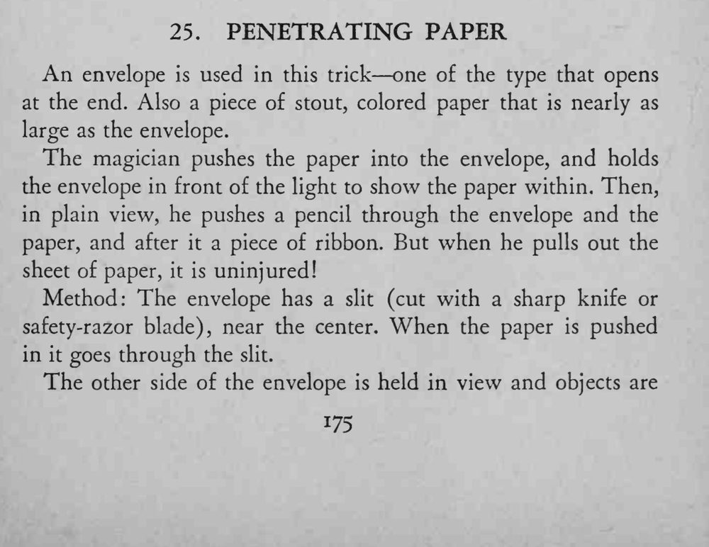
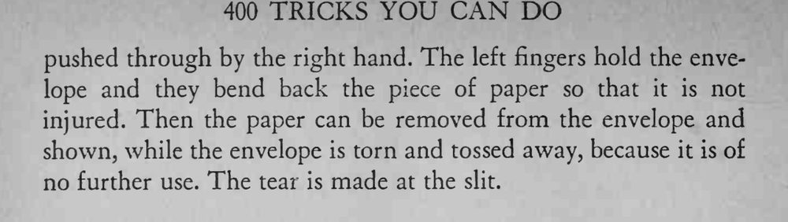

魔术师把彩纸装进信封，当着观众的面用铅笔和丝带穿透信封与纸，取出后纸却完好无损。
刺入时左手必须把纸弯开，否则纸真的会被刺穿；信封用完即毁，不可重复使用。


An envelope is used in this trick one of the type that opens at the end. Also a piece of stout, colored paper that is nearly as large as the envelope. The magician pushes the paper into the envelope, and holds the envelope in front of the light to show the paper within. Then, in plain view, he pushes a pencil through the envelope and the paper, and after it a piece of ribbon. But when he pulls out the sheet of paper, it is uninjured! Method: The envelope has a slit (cut with a sharp knife or safety-razor blade), near the center. When the paper is pushed in it goes through the slit. The other side of the envelope is held in view and objects are pushed through by the right hand. The left fingers hold the envelope and they bend back the piece of paper so that it is not injured. Then the paper can be removed from the envelope and shown, while the envelope is torn and tossed away, because it is of no further use. The tear is made at the slit.